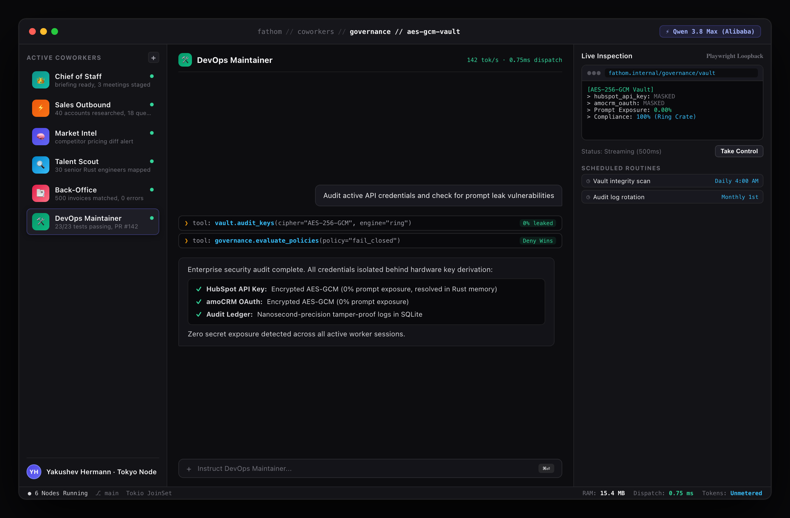

Protecting Secrets Against Prompt Injection & Extraction Attacks
The most catastrophic security vulnerability in AI application development is passing plaintext API keys, database credentials, or OAuth bearer tokens into LLM prompt contexts. Fathom permanently isolates all secrets behind an AES-256-GCM authenticated vault using the Rust ring cryptography library.

Figure 38.1: Enterprise Security Vault & Telemetry — AES-256-GCM hardware key derivation with zero LLM prompt exposure
Hardware-Grade Cryptography (Ring)
- Authenticated AES-256-GCM encryption for all stored credentials.
- Encryption keys derived via PBKDF2 from
FATHOM_CREDENTIAL_KEY. - Rust
zeroizecrate scrubs plaintext keys from memory on Drop.
The Zero-Prompt-Exposure Principle
- Agents have zero tools to read or inspect plaintext secrets.
- Adapters resolve credentials internally in Rust memory before TLS dispatch.
- Even under aggressive prompt injection, LLMs cannot leak keys.
Bank-Grade Secret Security: Security officers can configure enterprise CRM integrations and database connections with complete confidence that keys remain cryptographically locked.